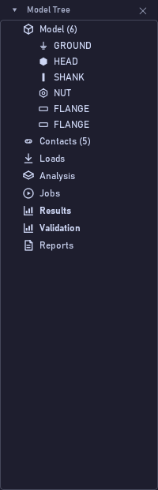
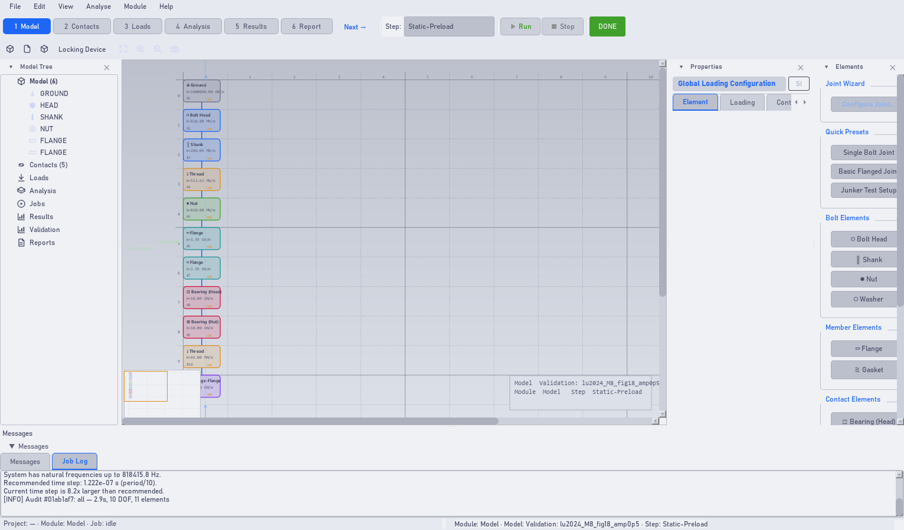

Anatomy of the window
Bolt Analysis Studio 1.0.0 · Narrated user guide
Listen to the narration · voice: en-US-AndrewNeural



Transcript
The window has six regions. At the top, the menus and the module bar. On the left, the model tree: each node is an element, a contact or a step, and clicking an element selects it in the drawing. In the centre, the viewport, where the joint appears as a vertical chain of blocks: each block shows the name, the stiffness and the share of load it carries. On the right, the properties panel, with three tabs: Element, Loading and Contact. At the bottom, the message area, with the work log and the log of each analysis. And at the base, the prompt line: one sentence saying what to do now. Every side panel can be closed with the cross in its title and reopened under View, Panels.
Every control on this screen
| Control | What it does |
|---|---|
| Model Tree | Navigation tree; the source of truth for what exists in the model. |
| Viewport | The drawing of the chain. Shift+F frames everything; the mouse wheel zooms. |
| Fit / Zoom In / Zoom Out / Screenshot | Viewport buttons: frame, zoom in, zoom out and save an image of the drawing. |
| Properties | Properties of whatever is selected, in three tabs. |
| Elements | The palette: drag a type onto the viewport to add it to the chain. Only shown in the Model module. |
| Messages / Job Log | Two tabs: program notices and the output of the running analysis. |
| Prompt line | One contextual instruction, always current. |
| View → Theme | Light and dark palettes; the choice is saved. |
| Help → Language | Switches the whole interface between Portuguese and English, live. |